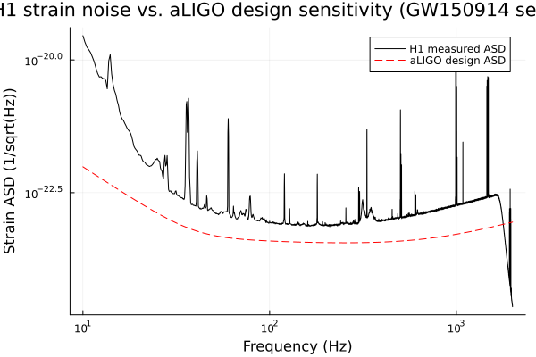
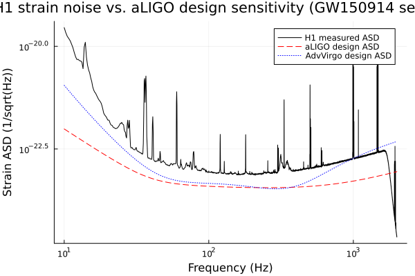

PSD & ASD Estimation
One of the principal ways to characterize a gravitational-wave detector's sensitivity is its amplitude spectral density (ASD): how much strain noise the detector has, as a function of frequency. This tutorial estimates the ASD of a real off-source strain segment, then overlays it against the Advanced LIGO design-sensitivity curve to see how far a real, non-ideal detector sits from its design goal.
using GravitationalWaveData
using PlotsFetching data
We use the standard segment shared by these tutorials: 4096 seconds of real H1 strain data surrounding GW150914. fetch_open_data downloads (and locally caches) the official GWOSC HDF5 file; load_gwosc_strain reads it into a TimeSeries (plus a data-quality bitmask series we don't need here).
path = fetch_open_data("H1", 1126256640, 1126260736)
strain, dq_mask = load_gwosc_strain(path)
strainTimeSeries{Float64}(16777216 samples, t0=1.12625664e9, dt=0.000244140625, duration=4096.0s, name="strain")duration(strain), sample_rate(strain)(4096.0, 4096.0)Estimating the ASD
asd estimates a one-sided amplitude spectral density via median-Welch averaging (Hann-windowed segments, median-of-periodograms across segments with the standard ln(2) debiasing correction – see docs/CONVENTIONS.md's "PSD/ASD normalization" section for the exact convention). seglen is given in samples, not seconds – at H1's 4096 Hz sample rate a 4-second segment (with the default 50% overlap) is 4 * 4096 samples.
h1_asd = asd(strain; seglen=4 * 4096, overlap=0.5)FrequencySeries{Float64}(8193 bins, f0=0.0, df=0.25, name="strain ASD")Reference: the aLIGO design-sensitivity curve
aligo_design_asd evaluates Advanced LIGO's "zero-detuning, high-power" design ASD, ported verbatim from LALSimulation's XLALSimNoisePSDaLIGOZeroDetHighPower (a full quantum-noise
- thermal-noise model, not the simpler closed-form "Ajith fit" some other codebases use under a
similar name – see docs/CONVENTIONS.md). Passing an (f0, df, n) grid rather than a bare frequency vector asks it to return a FrequencySeries aligned exactly to h1_asd's own bins, so the two overlay directly with no interpolation needed.
The model is only valid above ~9 Hz (it omits seismic/Newtonian-noise terms that dominate below that), and its DC bin is set to exactly 0.0 by convention rather than evaluated (the formula is singular at f=0) – so we restrict the comparison to a physically sensible band before plotting, which conveniently also avoids trying to log-plot a zero.
design = aligo_design_asd(h1_asd.f0, h1_asd.df, length(h1_asd))
band = (10.0, 2000.0)
h1_asd_band = crop(h1_asd, band...)
design_band = crop(design, band...)FrequencySeries{Float64}(7960 bins, f0=10.0, df=0.25, name="aLIGO zero-detuning high-power design ASD")p = plot(h1_asd_band; label="H1 measured ASD", color=:black,
xlabel="Frequency (Hz)", ylabel="Strain ASD (1/sqrt(Hz))",
title="H1 strain noise vs. aLIGO design sensitivity (GW150914 segment)")
plot!(p, design_band; label="aLIGO design ASD", color=:red, linestyle=:dash,
ylabel="Strain ASD (1/sqrt(Hz))")
The measured noise floor roughly tracks the shape of the design curve – rising steeply below ~20 Hz (the seismic wall), flattening into a broad sensitive "bucket" through the low hundreds of Hz, then rising again at high frequency (shot noise) – but it does not hug the design curve everywhere. This is real early-observing-run (O1-era) data, not a detector already running at its final design sensitivity, so expect the measured curve to sit visibly above the design curve across much of the band, especially away from the most sensitive ~100-300 Hz region. That gap between "measured" and "design" is itself useful diagnostic information – it's exactly what commissioners track as a detector is tuned toward its design goal over an observing run.
Virgo's design curve
ReferenceCurves.jl also ships an Advanced Virgo design curve, avirgo_design_asd, with the exact same two calling conventions as aligo_design_asd (a plain frequency vector, or an (f0, df, n) grid returning a FrequencySeries). Unlike aLIGO's curve, AdvVirgo's is a simple phenomenological log-polynomial/exponential fit (Manzotti & Dietz 2012) rather than a full quantum-noise derivation – see docs/CONVENTIONS.md for the distinction. Adding it to the same plot is a one-liner:
avirgo_band = crop(avirgo_design_asd(h1_asd.f0, h1_asd.df, length(h1_asd)), band...)
plot!(p, avirgo_band; label="AdvVirgo design ASD", color=:blue, linestyle=:dot,
ylabel="Strain ASD (1/sqrt(Hz))")
p
This page was generated using Literate.jl.